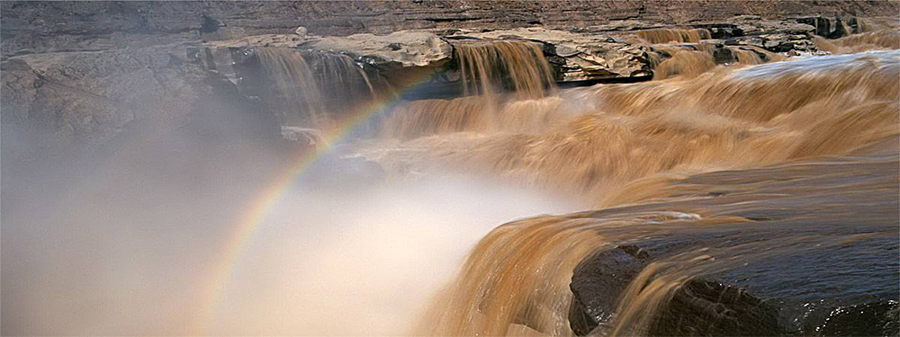

干流概况
黄河源
青海省玛多县多石峡以上地区为河源区，面积为2.28万平方公里，是青海高原的一部分，属湖盆宽谷带，海拔在4200米以上。盆地四周，山势雄浑，西有雅拉达泽山，东有阿尼玛卿山（又称积石山），北有布尔汗布达山脉，南以巴颜喀拉山与长江流域为界。湖盆西端的约古宗列，是黄河发源地。
星宿海以上有三支：扎曲、约古宗列曲和卡日曲。扎曲，居于最北部，发源于查哈西拉山，河长70千米，河道窄，支流少，水量有限，一年中大部分时间断流。约古宗列曲，位于星宿海西，在三条上源中居中，发源于约古列宗盆地西南隅，海拔4750米，水量甚小，为宽1.0-1.5米，深0.1-0.2米的小溪。南部支流为卡日曲，发源于巴颜喀拉山支脉各姿各雅山的北麓，海拔4800米，有5处泉水从谷中涌出，汇成宽约3米，深0.3-0.5米，流速约3米/秒的一条小河，河流终年有水。
2008年三江源头科学考察队考察后认为，由于卡日曲比约古宗列曲长36.54公里，流量比约古宗列曲多两倍，按照国际上河流正源确定的三个标准，即“河源唯长、流量唯大、与主流方向一致”的标准，同时考虑流域面积、河流发育期、历史习惯，考察队建议在科考成果通过评审后，经过法定程序审核批准，将黄河源头定位于卡日曲。


黄河